Zennの「LLM」のフィード
フィード
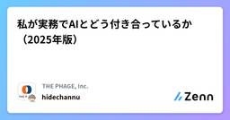
私が実務でAIとどう付き合っているか（2025年版）
Zennの「LLM」のフィード
はじめに前回の記事では、AIに「思考」までアウトソースしてしまった結果、結局すべてを自分で実装し直したという「痛烈な反省」を共有しました。今も私はAIを使い続けています。ただし、失敗を踏まえ、「AIに振り回される」のではなく、「AIを自分でコントロールする」ことを常に意識しています。この一年、私はあらゆるツールを実務（あるいはその周辺）で試してきました。Devin、Cursor、Claude CodeやCodex。それ以外にもChatGPT、Gemini、NotebookLM、ManusやFeloなど、SNSで話題になっているものは一通り触ってきました。（他にもあった気がする...
12時間前
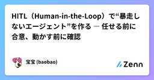
HITL（Human-in-the-Loop）で“暴走しないエージェント”を作る ― 任せる前に合意、動かす前に確認
Zennの「LLM」のフィード
はじめに――自動化の前に“相棒にする”エージェントをつないだ初日は快感です。ところが、権限を広げるほど想定外の操作や根拠のあいまいな判断が混じり始める。ここで効くのがHITL（Human-in-the-Loop）、つまり人が対話で介入する仕組みです。各社のガイドや運用事例でも、人が承認・中断・修正できる経路を最初から組み込むことが強調されています。たとえば、実行前にユーザーが操作を確認・承認できる設計や、低信頼時だけ審査を起動する仕組みが公開されています。(Amazon Web Services, Inc.) 1. HITLは“緊急停止ボタン”ではなく“合意を作る会話”HI...
12時間前
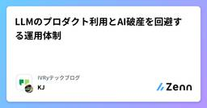
LLMのプロダクト利用とAI破産を回避する運用体制
Zennの「LLM」のフィード
こんにちは、IVRy でデータエンジニアとして働いている松田 健司(@ken_3ba)と申します。今まで「マツケン」というあだ名しかつかなかったのですが、社内では長いからという理由でKJと呼ばれるようになりました。本記事は、IVRy Advent Calender「IVRy AIブログリレー Part2」6日目の記事です。https://adventar.org/calendars/115522025年7月1日入社でまだ半年経っていませんが、前職からDatabricksをずっと触っており、IVRyでもDatabricksを利用したデータ基盤構築や利活用をしています。この記事では、...
12時間前

「一次情報＋証拠」をブラウザ操作とLLMでリサーチ自動化した際の実装メモ
Zennの「LLM」のフィード
この記事は、ナウキャスト Advent Calendar 2025 の6日目の記事です。初めまして！株式会社ナウキャストでインターンをさせてもらってます、大学生のロゲメガです。普段は大学生活の他に、42Tokyoというところでプログラミングのお勉強をしたり、趣味で株をやってたりします。ご縁があって、2024年の夏の短期インターンをさせてもらったことがきっかけで、2025年の春頃から長期インターンに入らせてもらっています。この記事では、長期インターンの中で夏頃に取り組んだことについて、簡単にまとめてみたものです。 はじめに米国株の企業情報を「一次情報にあたり、証拠付きで提出す...
15時間前
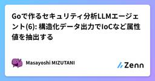
Goで作るセキュリティ分析LLMエージェント(6): 構造化データ出力でIoCなど属性値を抽出する
Zennの「LLM」のフィード
この記事はアドベントカレンダー「Goで作るセキュリティ分析LLMエージェント」の6日目です。今回はLLMにテキストを作成させる際、構造化データ（主にJSON形式）を出力させる方法について解説します。今回のコードは https://github.com/m-mizutani/leveret の day06-structured-output ブランチに格納されていますので適宜参照してください。 なぜ構造化データの出力が必要か前回ではアラートのタイトルと要約を個別にテキストで自動生成する方法を実装しました。しかし、この方法にはいくつかの問題があります。まず、複数項目についてテキストを...
16時間前
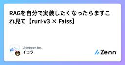
RAGを自分で実装したくなったらまずこれ見て【ruri-v3 × Faiss】
Zennの「LLM」のフィード
この記事はLivetoon Tech Advent Calendar 2025の６日目の記事です。https://adventar.org/calendars/12157CTOの長嶋が担当です。本日は、皆さんよく聞くRAGのお話です。 宣伝https://kai0.onelink.me/Hogh/AdventCalendar2025今回のアドベントカレンダーでは、LivetoonのAIキャラクターアプリのkaiwaに関わるエンジニアが、アプリの話からLLM・合成音声・インフラ監視・GPU・OSSまで、幅広くアドベントカレンダーとして書いて行く予定です。是非、publica...
1日前
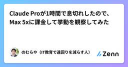
Claude Proが1時間で息切れしたので、Max 5xに課金して挙動を観察してみた
Zennの「LLM」のフィード
!私が書いた原文を AI に表現をブラッシュアップしてもらっています TL;DRClaude Pro で作業してたら、1 時間で Usage が 100% になった。「え、もう？」という感じだったんですけど、このペースだと週の途中で詰みそうだったので、思い切って Max 5x に上げてみました。月 100 ドルはさすがに躊躇したんですけど、Pro の残り期間は日割りで差し引かれるし、切り替えた瞬間に Usage が 0% に戻ったので、結果的には悪くない判断だったかなと。2025 年末時点の話なので、仕様は変わるかもしれません。 プランの違いClaude の個人向...
1日前
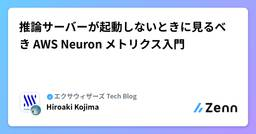
推論サーバーが起動しないときに見るべき AWS Neuron メトリクス入門
Zennの「LLM」のフィード
Neuronインスタンスがブラックボックスになりがち問題先端技術開発グループ（WAND）の小島です。エクサウィザーズ Advent Calendar 2025 6日目の記事です。AWSの機械学習アクセラレータであるAWS TrainiumとAWS Inferentia（Neuron）は、LLMホストに有望な選択肢です。これまでの検証を通じ、「サーバー起動失敗時の原因（ホストメモリ、Neuronメモリ、あるいはその他）の特定に手間取る」という課題が見えてきました。AWS Inferentia2とvLLMでLlama 3.2の推論サーバーを構築する手順AWS Batchでハマっ...
1日前
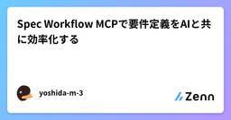
Spec Workflow MCPで要件定義をAIと共に効率化する
Zennの「LLM」のフィード
1. Spec Workflow MCPとはSpec Workflow MCPは、ソフトウェア開発における要件定義から実装までの一連のプロセスを体系的にドキュメント化し、AIと協働しながら進めることができるModel Context Protocol (MCP) サーバーです。プロダクトの方向性を定義するSteering Documentsと、具体的な機能仕様を記述するSpecsの2つのカテゴリに分かれたドキュメント群を、LLMの支援を受けながら段階的に作成していきます。各ドキュメントはダッシュボードでレビュー・承認でき、最終的にタスクから自動的にIssueを生成して実装に繋げる...
1日前
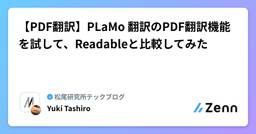
【PDF翻訳】PLaMo™翻訳のPDF翻訳機能を試して、Readableと比較してみた 2
2
Zennの「LLM」のフィード
はじめにこんにちは！株式会社松尾研究所でインターンをしている田代です。本記事は、松尾研究所 Advent Calendar 2025の記事です。現在、修士1年であり、インターンでは医療AI関連のプロジェクトに参加させていただいております。先日、株式会社Preferred Networks（以下、PFN）から、PLaMo™翻訳のPDF翻訳機能がリリースされました。PDF翻訳の類似サービスである、Readableを日常で1年以上使用しておりますので、それと比較してレビューできればと思います。https://x.com/PLaMoLLM/status/19954604981127...
1日前
データ処理におけるGeminiとClaudeの使い分け戦略
Zennの「LLM」のフィード
これは株式会社TimeTree Advent Calendar 2025の6日目の記事です。こんにちは。TimeTreeの伊藤です。最近はもっぱらLLMを使った業務効率化や機能開発に取り組んでいます。特に「Claude」と「Gemini」の2つのモデルは、同じLLMの枠組みながら、それぞれ性格がけっこう違っています。色々と試していく中で「どちらか一方を使う」というより どう組み合わせるか が重要になってきたなと感じてきました。本記事では、「社内やWeb上にある非構造化テキストから、ドメイン固有の情報を抽出・検証して、統一フォーマットのJSONとして蓄積する」 というバッチ処理を通...
1日前
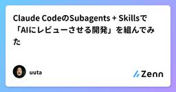
Claude CodeのSubagents + Skillsで「AIにレビューさせる開発」を組んでみた
Zennの「LLM」のフィード
Claude Code開発用のAgent Orchestrationを実験的に組み、実践した記録です。きっかけは、下記の動画で「Research」「Planning」「Implementation」に分けて計画と実装を進めていく方法を見たことでした。https://www.youtube.com/watch?v=IS_y40zY-hc主な主張としては、LLMに research.md 、 plan.md を作成してもらい、userはそれらのmarkdownのみレビューをするということです。成果物であるコードはレビューせず、仮に何か不具合が生じているのであれば research.md...
1日前
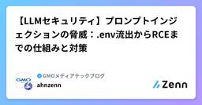
【LLMセキュリティ】プロンプトインジェクションの脅威：.env流出からRCEまでの仕組みと対策
Zennの「LLM」のフィード
【LLMセキュリティ】プロンプトインジェクションの脅威：.env流出からRCEまでの仕組みと対策大規模言語モデル（LLM）の導入が進む中、「プロンプトインジェクション」は単なる「AIへの悪ふざけ」ではなく、深刻なセキュリティホールとして認識する必要があります。本記事では、プロンプトインジェクションの定義から、開発者が知っておくべき高度な攻撃手法（.envファイルの流出など）、そして具体的な予防策について解説します。 1. プロンプトインジェクション（Prompt Injection）とは？プロンプトインジェクションとは、攻撃者がAIモデル（主にLLM）に悪意のある入力（...
1日前
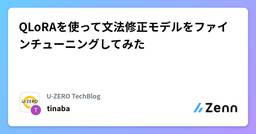
QLoRAを使って文法修正モデルをファインチューニングしてみた
Zennの「LLM」のフィード
※これはU-ZERO Advent Calendar 2025の5日目の記事です。前日の記事はこちら。 はじめに株式会社U-ZEROで働いているエンジニアです。私たちの組織では、k-meansなどの機械学習を実装したり、LLMなどのAI技術を活用したりしています。今回は、QLoRA（Quantized Low-Rank Adaptation）を使用して、Gemma 2Bモデルを文法修正タスクにファインチューニングし、その効果を検証してみました。QLoRAはLoRAに4bit量子化を組み合わせることで、さらにメモリ効率を高め、低リソース環境でもファインチューニングが可能になる手...
1日前
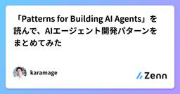
「Patterns for Building AI Agents」を読んで、AIエージェント開発パターンをまとめてみた
Zennの「LLM」のフィード
こんにちは、karamageです。最近、AIエージェントを開発することが多くなってきています。 以下の記事にもそのことについて書きました。https://qiita.com/karamage/items/bf8976f2a329a5f87a57「AIエージェント開発って難しいなー」 と嘆くことが多い日々です＞＜何が難しいかというと、AIエージェント開発は、従来のソフトウェア開発とは全く違ったもの になることです。便利なAIライブラリとかフレームワークがあって、とりあえずAIエージェントのプロトタイプを作ってみることのハードルは下がったんですが、そこから本番運用に持って行くまでの...
1日前
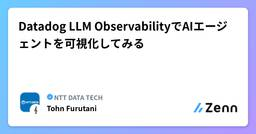
Datadog LLM ObservabilityでAIエージェントを可視化してみる
Zennの「LLM」のフィード
MEKIKI X AIハッカソンもぐもぐ勉強会 Advent Calendar 2025の5日目を担当する古谷です。2025年6月にDatadogから提供開始されたDatadog LLM Observabilityを実際に動かしてみたので、今回はその検証レポートをお届けします。 そもそもLLM Observabilityとは？生成AIアプリケーションの開発が加速する一方で、その内部動作はブラックボックス化しやすいという課題があります。特にRAGやMCP等を含むAIエージェントでは、プロンプト → 応答検索 → 推論 → 再プロンプト外部ツール呼び出し（MCP）ベクトル検...
2日前
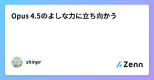
Opus 4.5のよしな力に立ち向かう
Zennの「LLM」のフィード
こんにちは、かがわ（@shinpr_p）です。Claude Code × Opus 4.5を使った開発もようやく安定してきた今日この頃、みなさんはどんなAI開発ライフをお過ごしでしょうか？この記事では、Opus 4.5を使いこなすために試行錯誤した対策を2つ紹介します。 前提：Opus 4.5の設計思想を理解する私が一番頭を悩ませたのが、作業の過程をスキップされることが増えたという事実です。調べてもらったのですが、スキップは意図的な設計変更だそうです。公式ドキュメントにこんな記載があります。Claude 4.5 models tend toward efficiency...
2日前
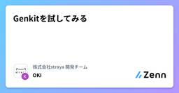
Genkitを試してみる
Zennの「LLM」のフィード
はじめにみなさん、こんにちは！ 株式会社strayaでエンジニアをしている大木です。普段は新規プロダクトの仮説検証や採用等を担当しています。テックブログを書くのはだいぶ久しぶりですが、肩慣らし程度に書いていきたいと思います！ Genkit とはGenkitは Google社がproductionで利用している、と言っているAIアプリケーション用のライブラリとなっています。JavaScript、Golang、Python と3つの言語で提供されています。https://genkit.dev/今回はGolangを使いたいと思います。 セットアップGenkitはfi...
2日前
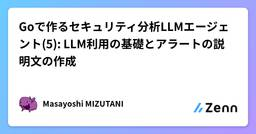
Goで作るセキュリティ分析LLMエージェント(5): LLM利用の基礎とアラートの説明文の作成
Zennの「LLM」のフィード
この記事はアドベントカレンダー「Goで作るセキュリティ分析LLMエージェント」の5日目です。本日はもっとも簡単なLLMのAPI利用ということで、自動的にアラートのタイトルや要約を作成してみます。 APIクライアントの設計本日からいよいよLLMのAPIを利用していきますが、まずはAPIクライアントの設計について説明します。LLMのAPIクライアントはpkg/adapter/gemini.goにすでに実装されています。今回はGoogle CloudのVertex AI経由でGemini APIを利用するため、google.golang.org/genai というSDKを使用しています...
2日前
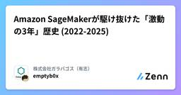
Amazon SageMakerが駆け抜けた「激動の3年」歴史 (2022-2025)
Zennの「LLM」のフィード
この記事は株式会社ガラパゴス（有志） Advent Calendar 2025の5日目です今回は、最近触れていなかったSageMaker の歴史について、3年前から遡ってどう進化を遂げているのか書いてます！AWS では、Bedrockしか触っていなかったので、出戻ろうとしています。 序章今回の記事は僕が空白期間として残している2022年から2025年現在に至るまでのSageMakerの進化をまとめましたので、僕と同じくLLM以降追えていない人向けに発信していきます！正直なところ、僕らが情報を追っていた2021年頃までの機械学習（ML）って、すごく直線的でしたよね。「データを...
2日前